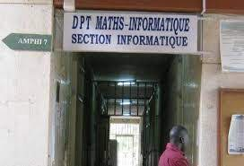
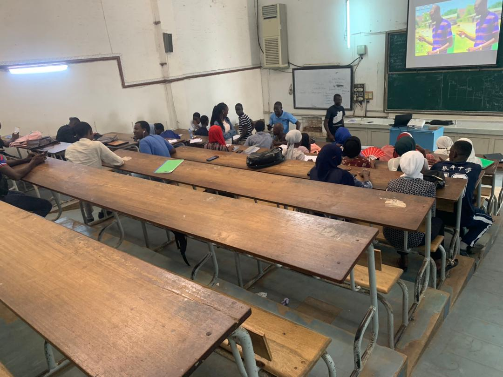
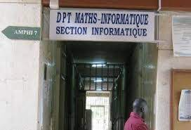
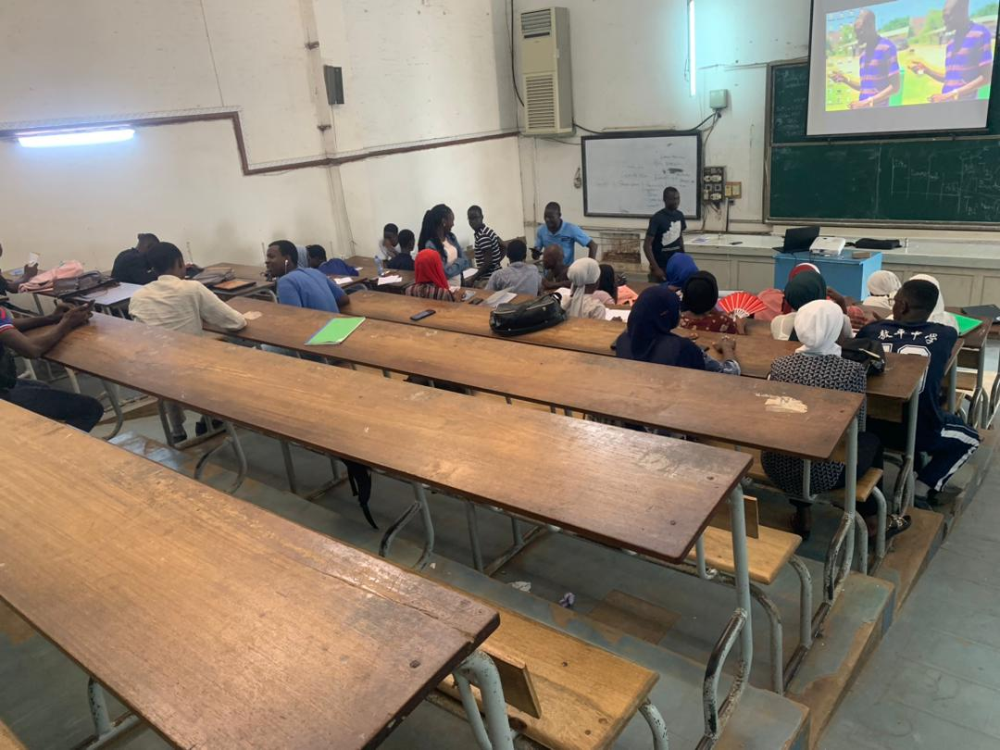

Université
Cheikh Anta Diop:
Un service au coeur du savoir
Lux Mea Lex
L2 INFORMATIQUE
Description de la l2 INFORMATIQUE
La l2 informatique est classe appartenante a la FST dans le
departement mathematique informatique plus precisement la section
informatique
L'actuel L2 info est classe constitue des environ 50 etudiants dont la
plupart sont inscrit en 2020-2021 avec un bac 2019-2020
Cette classe fait ses cours a la salle RC4 et l' amphi 3 . Notre
emploi du temps se deroule du Lundi au
Vendredi .
Voici notre responsable,il se nomme Daouda BA:
Voici quelques images de notre classe :
 



Nous avons de bons professeurs pour chaque matiere . Durant le 1er
semestre nous avons eu à faire plusieurs matiere dont :
Systeme d'exploitation: par Mr KONATE
Architecture des ordinateurs par Mr KONATE
Reseau 1 par Mr GUEYE
Algorihtme par Mr DJAMAL
POO par Mr DEYE
Base de donnee par Mr GUEYE
Physique par Mr MBOW
Algebre par Mr BARRY
Analyse par Mr DIAKHITE
Durant le 2nd semestre nous avons eu à faire moins de matiere qu'au
1er Semestre. Ces dernieres sont
Developpement Web 1 par Mr BAME
Systeme d'information par Mr GUEYE
Reseau 2 par Mr GUEYE
Base telecom par Mr REMY
Calcul numerique par Mr DIAKHITE
Proba-Statistique par Mr SAGNA